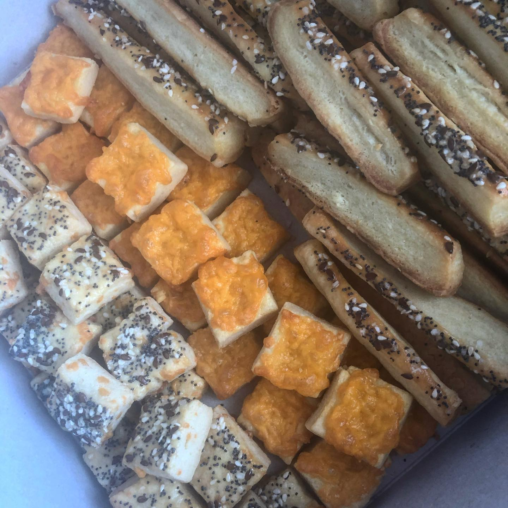

Bryndzové tyčinky — Normy Jedál
Bryndzové tyčinky a Syrové sušienky vhodné pre každú oslavu alebo náhlu návštevu 🧀🥰#bryndza #tycinky #bryndzovetycinky #sušienky #syr #syrove #cheese #pekaren #bakery #pekar #pekarka #baker #pecenie #peceniejeradost #pecenieslaskou #baking #bakingtime #bakingwithlove #bakingwithlove #remeselnapekaren #slovakbaker #slovakbakery #slovakia #svadba #wedding